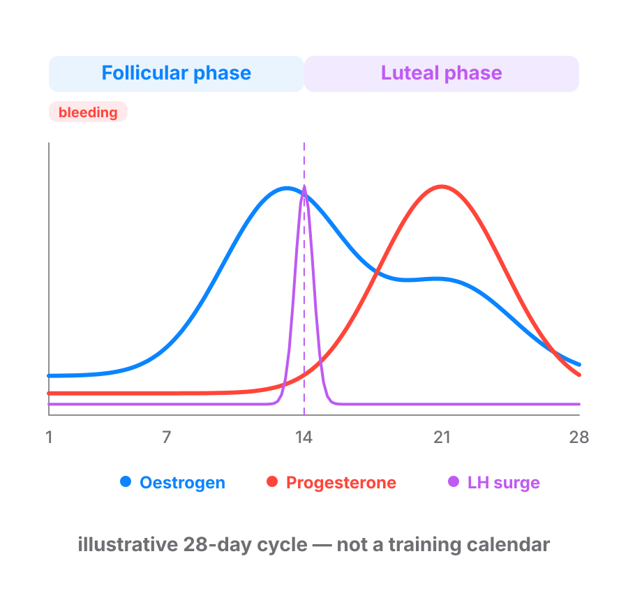

Nothing measured across her cycle shows her maximal strength reliably higher or lower by enough to justify changing her programmed loads by phase. Leave her percentages alone.
What the cycle is. The menstrual cycle runs from the first day of one period to the first day of the next. Her two main sex hormones, oestrogen and progesterone, rise and fall across it. The first half runs from her period to ovulation (follicular phase). The second half runs from ovulation to the next period (luteal phase).

Why the load stays. The hardest she can contract a muscle (maximal voluntary contraction) has not been shown to change by phase. Neither has how fast she can produce force (rate of force development). Bar speed tells the same story. Nothing measured leaves her reliably weaker in one phase than another.
What this means for the program. Most cycle-based programming advice assumes the opposite. It drops the load in one phase. That costs her training and buys nothing you can measure. Whatever else the cycle changes, nothing measured shows it moving what she can lift maximally by enough to program around.
What does move is narrower than people think. Reps to failure on a back squat at a submaximal load do move. They are higher in the days before ovulation (late follicular phase). They are lower in the first days of her period (early follicular phase). The upper body shows nothing. Bench press reps to failure are flat across all three phases.
Generalising the squat finding. It is one lower-body movement at one submaximal load. The upper body did not move at all.
We don't see a phase of the month that reliably shifts your strength enough to change what's on the bar. Some weeks a set of ten feels harder than others, and that's real. We work off what you actually report.
follicular phase: The first half of the cycle, from the start of her period to ovulation.
luteal phase: The second half of the cycle, from ovulation to the next period, when progesterone is higher.
maximal voluntary contraction: The most force she can produce on purpose in one all-out effort.
rate of force development: How fast a muscle can produce force, not how much. It is the quality behind power and speed.
late follicular phase: The days just before ovulation, when oestrogen is at its peak.
early follicular phase: The first days of the cycle, from the start of her period, when oestrogen and progesterone are both low.